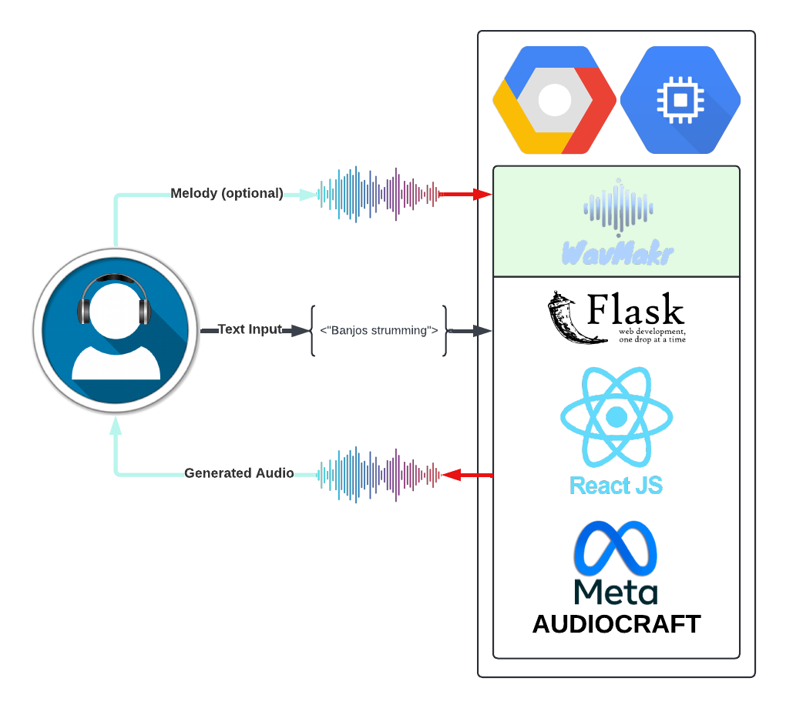

WavMakr: AI Music Generation
WavMakr is an innovative tool leveraging AI to convert text into music, enhancing creative processes for artists and content creators.
Meet The Team
- Aryan Mistry - MLE, Google Cloud Engineer
- Ryan Bernstein - Field Investigator
- Shreyas Anil - Frontend Developer
- Evan Turkon - Backend Developer
- Justin Yang - UX/UI Researcher
The Problem
Music production is hard, and existing software is intimidating and inaccessible:
- User 1: “Learning how to use a Digital Audio Workstation is already time-consuming enough and learning all the other tooling takes even longer.”
- User 2: “I can hear the beat in my head, but translating that into something tangible on my computer is often frustrating.”
- User 3: “Digital Audio Workstations are way too expensive and any other products that I wanted to use, I also had to pay for.”
Product Demo
Our product allows users to enter a prompt, which may include a reference melody, and generates a short audio clip using the AudioCraft MusicGen model.
GitHub: WavMakr
Technical Discussion
Here’s how our model works:
- User enters a prompt which may include a reference melody.
- Prompt and music sample are sent to the AudioCraft MusicGen Model.
- Generated audio is outputted.
The Model
MusicGen, engineered by Audiocraft:
- Trained with 10K high-quality music tracks, Shutterstock and Pond5 music data.
- We used a pre-trained version of MusicGen that has 1.5 billion parameters and can utilize uploaded melodies along with prompts to generate up to 15 seconds of music.
- Source: Audiocraft MusicGen
Target Users
WavMakr is ideal for:
- Amateur Musicians and Hobbyists
- Educational Institutions
- Podcasters and Content Creators
- Tech-savvy Music Enthusiasts
Competition & Potential Impact
Current Market: Lots of options, but in early development and rough.
- ~60% of independent musicians use AI for music generation.
- Big music production software such as Ableton, FLStudio, etc.
- Up-and-coming generative AI such as Fadr AI.
- Implement a recommender system for similar music.
- Optimization: More cost-effective, faster running time.
- Improvement of UI with A/B Testing.
- Fine-tuning of the model.
Future Plans
Monetization: Subscription service or ads.
Technical:
Conclusion & Key Takeaways
Our mission is to help users find musical inspiration with the power of AI. WavMakr allows users to input a prompt and get a musical sample as the output. Further functionality will be implemented as we raise more funding. This product will provide substantial benefits to aspiring music producers of all backgrounds and levels.
Thank you for exploring WavMakr!